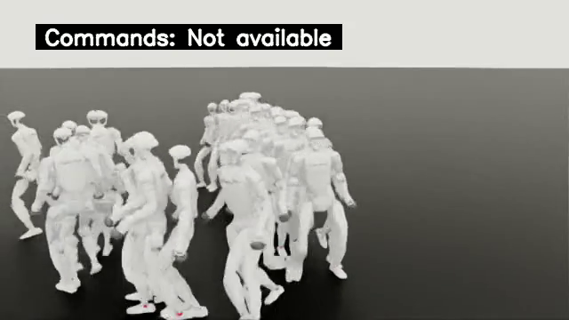

eval-teacher-locomotion

checkpoint 19999；整项failed reset 397，timeout 0，clip结束事件 0。
最长quality绑定原片13.2秒；按时长确定性选择，不表示最佳或典型表现。指标来自整项64环境，并非只统计本视频。
完整原片 · 原始指标 · 原生manifest
全部11段原片（9段quality绑定）
- episode_10_1791847049.mp4 · 7.86秒 · quality绑定
- episode_11_1791847078.mp4 · 9.1秒 · quality绑定
- episode_12_1791847119.mp4 · 13.2秒 · quality绑定
- episode_13_1791847143.mp4 · 7.34秒 · quality绑定
- episode_1_1791846955.mp4 · 0.02秒 · 较早原片，未进入quality时间筛选
- episode_3_1791846955.mp4 · 0.02秒 · 较早原片，未进入quality时间筛选
- episode_5_1791846955.mp4 · 0.02秒 · quality绑定
- episode_6_1791846964.mp4 · 2.94秒 · quality绑定
- episode_7_1791846989.mp4 · 8.56秒 · quality绑定
- episode_8_1791846999.mp4 · 2.94秒 · quality绑定
- episode_9_1791847024.mp4 · 8.06秒 · quality绑定